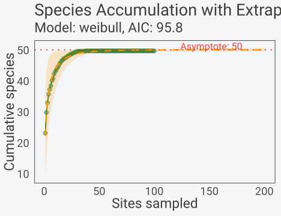
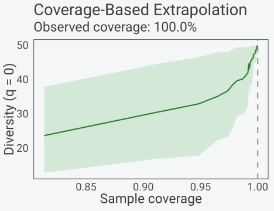
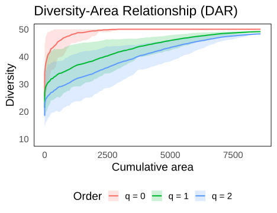

Extrapolation and Species-Area Models
Gilles Colling
2026-10-10
Source:vignettes/extrapolation.Rmd
extrapolation.RmdInstallation
install.packages("spacc") # CRAN
install.packages("pak") # development version
pak::pak("gcol33/spacc")Overview
Most surveys stop before the last species is found. The observed
species count is then a lower bound, and the gap between it and the true
richness depends on how the curve was approaching its plateau when
sampling ended. spacc estimates that plateau three ways: by fitting an
asymptotic model to the mean accumulation curve, by extrapolating along
the sample-coverage axis, and by relating diversity to cumulative area.
This vignette covers the theory behind each approach, the exact model
equations as they are coded in extrapolate(), how to judge
whether a fit can be trusted, and when extrapolation should be avoided
altogether.
The running example simulates a community with a known number of species. The ground truth is 50 species spread over 100 sites, so every estimate below can be checked against a value we actually control, which is rarely possible with field data.
Algorithm overview
extrapolate() takes a fitted spacc object,
reduces it to the mean accumulation curve, and fits one nonlinear model
to that curve by least squares through stats::nls(). The
asymptotic parameter of the model is then read off as the estimate of
total richness. Six model forms are available, selected through the
model argument: "michaelis-menten",
"lomolino", "asymptotic",
"weibull", "logistic", and "evt".
The first five all flatten toward a single ceiling and differ in how
sharply they bend and where the bend sits.
The Michaelis-Menten form (the default) rises steeply and decelerates smoothly, reaching half its ceiling at a fixed effort. It is the hyperbolic curve familiar from enzyme kinetics, transplanted to accumulation. The asymptotic exponential approaches its ceiling at a constant relative rate and has no inflection, so it is the most conservative of the five when the curve is already near saturation. The logistic is sigmoidal: it has an inflection point and an initial slow phase, which suits curves that start gently before accelerating. The Weibull form is a flexible generalisation that can be concave or sigmoidal depending on its shape parameter, and it nests the exponential as a special case. The Lomolino model is a sigmoidal curve on a logarithmic effort axis, designed by Lomolino (2000) specifically for species-area data and able to capture a long slow tail.
The EVT model is different in kind. Following
Borda-de-Agua et al. (2025), it represents the species-area relationship
as a two-component Weibull mixture rather than a single saturating
curve. The motivation is that empirical SARs are often triphasic: a
steep small-scale phase, a shallower intermediate phase, and a second
steepening at very large extents. A single asymptotic curve cannot bend
twice, so the mixture sums two Weibull components with separate scale
and shape parameters and a mixing weight, which lets the fitted curve
change curvature more than once. This model is fit with the bounded
"port" algorithm and falls back to a single Weibull when
fewer than ten points are available.
The five single-curve models differ in how much flexibility they spend. A model with more free parameters can follow the observed curve more closely, but the extra freedom is spent describing the sampled range, not constraining the ceiling beyond it. The asymptotic exponential, with two parameters and no inflection, is the least flexible and so the most stable when extrapolated, at the cost of forcing a particular approach to the plateau. The Weibull and Lomolino forms add a third parameter that adjusts curvature, which helps when the curve has an unusual shape but loosens the grip on the asymptote. spacc reads the asymptote off parameter \(a\) in all six models, which keeps the interface uniform: whatever curve shape is chosen, the estimate of total richness and its interval come from the same slot.
Coverage-based extrapolation, exposed through
extrapolateCoverage(), abandons the model-fitting route
entirely. Instead of asking what the curve does as effort grows without
bound, it asks what richness would be at a target sample completeness,
using the asymptotic estimators of Chao et al. (2014). Sample coverage
is the fraction of the community’s total abundance carried by the
species already detected, so standardising to a fixed coverage compares
communities at equal completeness rather than equal effort. The
mechanism is rarity-driven: when many species are singletons the
coverage is low and the extrapolation deficit large, whereas a sample
dominated by species seen many times is already nearly complete and has
little room to grow. The diversity-area relationship, fit by
dar(), is the third route: it plots Hill numbers against
cumulative area (Ma 2018) and so describes how diversity scales
spatially across all orders, with the classical SAR recovered as the
special case of order zero.
The three routes answer slightly different questions and suit
different data. Model fitting suits a single well-sampled community
where a tidy asymptote with a confidence interval is the deliverable.
Coverage extrapolation suits comparisons across communities of unequal
sampling intensity, where the fair common ground is completeness rather
than effort. The DAR suits questions about scaling itself, where the
interest is in the exponent that links diversity to area rather than in
any single ceiling. spacc keeps all three behind a common
spacc pipeline so the same accumulation engine feeds each
one.
Data setup
library(spacc)
set.seed(42)
n_sites <- 100
n_species <- 50
coords <- data.frame(
x = runif(n_sites, 0, 100),
y = runif(n_sites, 0, 100)
)
species <- matrix(0L, n_sites, n_species)
for (sp in seq_len(n_species)) {
cx <- runif(1, 10, 90)
cy <- runif(1, 10, 90)
lambda <- 4 * exp(-0.0008 * ((coords$x - cx)^2 + (coords$y - cy)^2))
species[, sp] <- rpois(n_sites, lambda)
}
colnames(species) <- paste0("sp", seq_len(n_species))
pa <- (species > 0) * 1LEach species has a spatial centre and a Poisson abundance that decays
with distance from it, so range edges thin out the way real ranges do.
The true richness is n_species (50), and that number
anchors every estimate that follows.
Mathematical detail
Each model is written below with \(S\) for cumulative species count, \(n\) for sampling effort (number of sites accumulated), and a model-specific parameter set. In every case the parameter \(a\) is the asymptote, the estimated total richness toward which the curve flattens.
The Michaelis-Menten model is
\[S = \frac{a\, n}{b + n},\]
where \(a\) is the asymptote and \(b\) is the effort at which \(S\) reaches \(a/2\). Larger \(b\) means a slower approach to the ceiling. The asymptotic exponential is
\[S = a\bigl(1 - e^{-b n}\bigr),\]
with asymptote \(a\) and rate constant \(b > 0\) controlling how quickly the deficit \(a - S\) shrinks. The logistic model is
\[S = \frac{a}{1 + e^{-b (n - c)}},\]
where \(a\) is the asymptote, \(b\) is the steepness of the rise, and \(c\) is the effort at the inflection point where the curve is half its ceiling. The Weibull model is
\[S = a\Bigl(1 - e^{-(n/b)^{c}}\Bigr),\]
with asymptote \(a\), scale \(b\) setting the effort axis, and shape \(c\) governing curvature: \(c = 1\) recovers the exponential, \(c > 1\) gives a sigmoidal rise, and \(c < 1\) a sharper early climb. The Lomolino model is
\[S = \frac{a}{1 + b^{\,\log(c / n)}},\]
where \(a\) is the asymptote, \(c\) locates the curve along the log-transformed effort axis, and \(b\) controls the slope of the sigmoidal rise in log space. Because the effort enters as \(\log(c/n)\), the Lomolino curve stretches the small-effort region and compresses the large-effort tail, which is why it tracks species-area data with a long slow approach to the plateau better than the curves written on a linear effort axis.
Starting values matter for all of these because nls()
solves a nonlinear least-squares problem iteratively from an initial
guess. extrapolate() sets the starting asymptote to \(1.2\) times the observed maximum, since the
true ceiling lies above what has been seen, and sets the half-saturation
effort to the point where the observed curve first crosses half its
maximum. Reasonable starts of this kind keep the solver inside the basin
of the correct solution; poor starts are a common reason for
non-convergence on awkward curves.
The EVT mixture combines two Weibull components,
\[S = a\Bigl[w\bigl(1 - e^{-(n/b_1)^{c_1}}\bigr) + (1 - w)\bigl(1 - e^{-(n/b_2)^{c_2}}\bigr)\Bigr],\]
where \(a\) is the shared asymptote, \(w \in (0,1)\) is the mixing weight between the two components, \(b_1, b_2\) are their scales, and \(c_1, c_2\) their shapes. The two components can capture two distinct phases of curvature, which is what lets the mixture follow a triphasic SAR that a single saturating curve flattens out. In all six models the asymptote \(a\) is the quantity of interest: it estimates the richness the community would reveal under unlimited sampling, so the deficit \(a - S_{\text{obs}}\) is the number of species the survey is predicted to have missed.
Asymptotic extrapolation
extrapolate() fits an asymptotic model to the mean
accumulation curve to estimate total species richness:
sac <- spacc(pa, coords, n_seeds = 30, progress = FALSE)A single call returns one fitted model. The default is
Michaelis-Menten, but any of the six names can be passed. The returned
spacc_fit object carries the asymptote, its confidence
interval, the AIC, and the underlying nls fit, which is
what makes coef(), confint(), and
predict() work on it. By default the interval is a
calibrated bootstrap across the seed curves rather than the
nls profile interval; the difference and the reasons for it
are taken up below.
Model comparison
spacc supports six asymptotic models. Compare them to select the best fit:
models <- c("michaelis-menten", "lomolino", "asymptotic", "weibull", "logistic")
fits <- lapply(models, function(m) extrapolate(sac, model = m, interval = "none"))
names(fits) <- models
# Compare AIC
data.frame(
model = models,
asymptote = sapply(fits, function(f) round(f$asymptote, 1)),
AIC = sapply(fits, function(f) round(f$aic, 1))
)
#> model asymptote AIC
#> michaelis-menten michaelis-menten 51.3 222.9
#> lomolino lomolino 51.8 215.1
#> asymptotic asymptotic 49.4 411.8
#> weibull weibull 50.3 95.8
#> logistic logistic 49.9 185.2The asymptote estimates spread across models even when all fit the same curve, which is the central caution of model-based extrapolation: the ceiling is an extrapolated quantity, and models that agree closely over the observed range can still disagree about where they level off. The spread across these five asymptotes, set against the known true value of 50, shows directly how much model choice matters here.
best_name <- names(fits)[which.min(sapply(fits, function(f) f$aic))]
best <- extrapolate(sac, model = best_name)
plot(best) +
ggplot2::theme(
panel.background = ggplot2::element_rect(fill = "transparent"),
plot.background = ggplot2::element_rect(fill = "transparent")
)
Best-fitting asymptotic model with bootstrap band.
The solid line is the observed mean curve, the dashed line the fitted model extended past the data, the shaded band the bootstrap prediction interval, and the dotted horizontal line the estimated asymptote.
EVT model
The Extreme Value Theory model (Borda-de-Agua et al. 2025) uses a two-component Weibull mixture to capture the triphasic pattern observed in empirical species-area relationships:
fit_evt <- extrapolate(sac, model = "evt")
fit_evt
#> Extrapolation: evt
#> --------------------------------------
#> Estimated asymptote: 50.0 species
#> 95% CI (bootstrap): 50.0 - 50.4
#> Observed: 50.0 species (100% of estimated)
#> AIC: -193.2 RMSE: 0.09 (0.2% of mean)
#> Reliable to ~250 sites (2.5x sampled effort of 100)
#> --------------------------------------
#> Nonparametric: chao2 = 50.0 iChao2 = 50.0
#> (prefer these for calibrated total-richness intervals; see ?extrapolate)The EVT model requires sufficient data points (>10) and works best with real ecological data exhibiting a clear triphasic SAR pattern. With only 100 sites and a single simulated phase, the mixture has little extra structure to find, so it tends to mimic a single Weibull here. Its advantage appears on large multi-scale datasets where the curve genuinely bends more than once.
Fitting and fit quality
compareModels() fits every model in one call and ranks
them by AIC, adding BIC, delta-AIC, Akaike weights, parameter counts,
and a convergence flag. This is the recommended entry point when the
goal is model selection rather than a single pre-chosen form.
cm <- compareModels(sac)
cm
#> SAR Model Comparison
#> ------------------------------
#> evt AIC: -193.2 dAIC: 0.0 w: 1.000 S_max: 50.0 *
#> weibull AIC: 95.8 dAIC: 289.0 w: 0.000 S_max: 50.3
#> logistic AIC: 185.2 dAIC: 378.4 w: 0.000 S_max: 49.9
#> lomolino AIC: 215.1 dAIC: 408.3 w: 0.000 S_max: 51.8
#> michaelis-menten AIC: 222.9 dAIC: 416.2 w: 0.000 S_max: 51.3
#> asymptotic AIC: 411.8 dAIC: 605.1 w: 0.000 S_max: 49.4
#> ------------------------------
#> Best model: evtThe printed table is sorted with the best model first and starred.
The data frame behind it, reachable with as.data.frame(),
holds the same columns for further use:
as.data.frame(cm)[, c("model", "AIC", "delta_AIC", "AIC_weight", "converged")]
#> model AIC delta_AIC AIC_weight converged
#> 1 evt -193.23852 0.0000 1.000000e+00 TRUE
#> 2 weibull 95.79357 289.0321 1.727742e-63 TRUE
#> 3 logistic 185.18786 378.4264 6.695096e-83 TRUE
#> 4 lomolino 215.09734 408.3359 2.142867e-89 TRUE
#> 5 michaelis-menten 222.93504 416.1736 4.256573e-91 TRUE
#> 6 asymptotic 411.81789 605.0564 4.108371e-132 TRUEModels within about 2 delta-AIC units of the best are usually treated as indistinguishable on these data; the Akaike weight turns that into a probability that each model is the best in the set. A single model with a weight near 1 indicates a clear winner, whereas weights spread evenly across several models warn that the asymptote is poorly identified and any single point estimate is fragile.
The chosen fit exposes its parameters and intervals through the
standard extractors. coef() returns the fitted parameters
and confint() the asymptote interval. By default
confint() returns the bootstrap interval stored on the fit;
method = "profile" recovers the nls
profile-likelihood interval for comparison:
coef(best)
#> a b c
#> 50.3055289 2.6353322 0.5387455
confint(best)
#> 2.5 % 97.5 %
#> a 49.83558 50.94128
confint(best, method = "profile")
#> 2.5 % 97.5 %
#> a 50.19333 50.42069The profile interval is computed from the residuals of a single fit to the mean curve. Because averaging many seeds makes that curve very smooth, those residuals are tiny and the profile interval is correspondingly narrow, ignoring the variability between seed orderings. The bootstrap interval refits the model across resampled seed curves, so it propagates that across-seed variability and is the wider, more honest summary of how well the asymptote is pinned down.
extrapolate() also reports goodness of fit directly. The
fit carries the residual root-mean-square error over the observed range,
and print() shows it together with the asymptote, the
nonparametric chao2() and iChao2() estimates,
and an effort range within which predictions are reasonable:
best$gof$rmse
#> [1] 0.3753221
best
#> Extrapolation: weibull
#> --------------------------------------
#> Estimated asymptote: 50.3 species
#> 95% CI (bootstrap): 49.8 - 50.9
#> Observed: 50.0 species (99% of estimated)
#> AIC: 95.8 RMSE: 0.38 (0.8% of mean)
#> Reliable to ~250 sites (2.5x sampled effort of 100)
#> --------------------------------------
#> Nonparametric: chao2 = 50.0 iChao2 = 50.0
#> (prefer these for calibrated total-richness intervals; see ?extrapolate)The fit goes through nls(), which can fail to converge
when the curve is short, noisy, or far from saturated; the bounded
"port" algorithm used for EVT is more stable but still not
guaranteed. When fitting fails, extrapolate() returns an
object with NA asymptote rather than erroring, and
compareModels() marks that row as not converged so the
remaining models can still be ranked.
A small residual confirms that the chosen model tracks the observed range, but it says nothing about the extrapolated part of the curve, where there is no data to compute a residual against. Two models can have nearly identical residuals over the sampled effort and still place their ceilings far apart, which is why the AIC table and the asymptote interval carry more weight than the in-sample fit statistics.
A caution applies to the asymptote itself. On clustered or strongly
under-sampled presence-absence data the parametric asymptote tends to
overestimate true richness, sometimes by tens of percent, because the
curve is far from saturation. The bootstrap interval quantifies the
uncertainty of the fitted asymptote, but it is centred on that possibly
biased estimate and is not a calibrated interval for true total
richness. extrapolate() warns when the asymptote runs well
above the observed richness or disagrees with chao2(), and
for calibrated total-richness intervals the nonparametric estimators in
the richness-estimation vignette are the better tool. Using both routes
and checking that they roughly agree is more defensible than trusting
the asymptote alone.
Tuning
Three controls shape the quality of an extrapolation. The first is
the number of points the curve provides. The EVT mixture has six free
parameters and needs more than ten accumulation points before it will
fit at all; below that threshold extrapolate() falls back
to a single Weibull and warns. With 100 sites there is ample room, but
on a 20-plot survey the mixture should not be attempted.
The second is n_seeds, the number of random starting
points averaged into the mean curve. Each seed traces one accumulation
order; more seeds smooth the mean and tighten the confidence band, which
steadies the fit because extrapolate() works on the mean.
The effect is visible in the asymptote estimate as the seed count
rises:
sapply(c(5, 20, 50), function(k) {
s <- spacc(pa, coords, n_seeds = k, progress = FALSE)
round(extrapolate(s, model = "michaelis-menten")$asymptote, 1)
})
#> [1] 50.6 50.8 51.0The estimate stabilises as seeds accumulate; the gain from 20 to 50
is typically smaller than from 5 to 20, so 30 to 50 seeds is a
reasonable default for a stable mean. The third control is the model
itself, and compareModels() already automates that choice
by ranking the whole set rather than committing to one form up
front.
Coverage extrapolation and DAR
extrapolateCoverage() estimates richness at coverage
levels beyond the observed maximum, using asymptotic estimators (Chao et
al. 2014):
cov <- spaccCoverage(species, coords, n_seeds = 20, progress = FALSE)
ext <- extrapolateCoverage(cov, target_coverage = c(0.95, 0.99, 1.0), q = 0)
ext
#> Coverage-based extrapolation
#> --------------------------------
#> Diversity order: q = 0
#> Observed coverage: 100.0%
#> Observed richness: 50.0
#>
#> Extrapolated richness:
#> C=95%: 33.8 (+/- 8.1)
#> C=99%: 42.8 (+/- 4.2)
#> C=100%: 49.4 (+/- 1.0)Targets below the observed coverage are interpolated along each
seed’s curve; targets above it extrapolate the pooled sample towards the
Chao1 asymptote for q = 0. The Shannon (q = 1)
and Simpson (q = 2) orders need the Hill curves of a
spaccHillCoverage() object. The printed output reports
observed coverage and richness alongside the extrapolated values so the
size of the extrapolation step is visible.
plot(ext) +
ggplot2::theme(
panel.background = ggplot2::element_rect(fill = "transparent"),
plot.background = ggplot2::element_rect(fill = "transparent")
)
Coverage-based extrapolation of species richness.
This is particularly useful when comparing communities with different abundances. Standardizing by coverage ensures equal completeness rather than equal sample size, so a richer but less thoroughly sampled community is not penalised for its lower count.
Sites drawn from a finite set of units
Chao2 and the Chiu (2023) coverage treat the sites as draws with
replacement from an unlimited set of units. An atlas grid or a plot
network is finite, and a survey often covers a large fraction \(w = t / T\) of its \(T\) units. Once \(w\) is large, the species not yet seen can
only sit in the few remaining units, and at \(w = 1\) the survey is a census.
n_units = T switches both estimators to their
without-replacement forms. The example is a 20 x 20 grid of rare
species, of which a survey visits 320 cells:
set.seed(1)
grid <- sapply(runif(300, 0.001, 0.03),
function(p) rbinom(400, 1, p) * (1L + rpois(400, 1)))
grid <- grid[, colSums(grid) > 0]
cells <- data.frame(x = rep(1:20, 20), y = rep(1:20, each = 20))
surveyed <- sample(400, 320)
survey <- grid[surveyed, ]
detected <- colSums(survey) > 0
c(true = ncol(grid), observed = sum(detected),
chao2 = chao2(survey)$estimate,
MoRE = chao2(survey, n_units = 400)$estimate)
#> true observed chao2 MoRE
#> 283.0000 275.0000 289.2842 280.5959
cov_wr <- spaccCoverage(survey, cells[surveyed, ], n_seeds = 20,
coverage = "chiu", progress = FALSE, seed = 1)
cov_grid <- spaccCoverage(survey, cells[surveyed, ], n_seeds = 20,
coverage = "chiu", n_units = 400,
progress = FALSE, seed = 1)
c(true = sum(grid[, detected]) / sum(grid),
with_replacement = mean(cov_wr$coverage[, 320]),
n_units = mean(cov_grid$coverage[, 320]))
#> true with_replacement n_units
#> 0.9950097 0.9896038 0.9959013Chao2 places the total above the true 283 species, MoRE below it and closer; the finite-population coverage lands next to the true share where the with-replacement one falls short of it.
chao2(n_units = ) is the moment-based estimator MoRE
(Chiu 2023, Methods in Ecology and Evolution). The coverage writes the
abundance of the undetected species as their estimated number times the
mean abundance of a unique species; with n_units the number
is the MoRE term, so richness and coverage of one sample rest on the
same estimate of what is missing. extrapolate(n_units = )
prints MoRE next to the fitted asymptote.
On simulated grids, with the truth taken as the share of the grid’s total abundance held by the detected species, the finite-population coverage has the lower error once half the grid is sampled. The grids are 200 cells with occupancies of 0.003 to 0.15 (common) and 400 cells with occupancies of 0.001 to 0.02 (sparse), 400 draws per row:
| Grid | \(w\) | True coverage | RMSE, with replacement | RMSE, n_units
|
|---|---|---|---|---|
| common | 0.10 | 0.856 | 0.064 | 0.060 |
| common | 0.50 | 0.996 | 0.0045 | 0.0038 |
| common | 0.95 | 1.000 | 0.0025 | 0.0002 |
| sparse | 0.10 | 0.467 | 0.073 | 0.104 |
| sparse | 0.30 | 0.838 | 0.038 | 0.040 |
| sparse | 0.50 | 0.947 | 0.020 | 0.016 |
| sparse | 0.80 | 0.991 | 0.016 | 0.004 |
| sparse | 0.95 | 0.999 | 0.015 | 0.0015 |
Near a census the with-replacement coverage stays below the truth by
about 0.014 on the sparse grid, because Chao2 still predicts undetected
species that cannot exist; the finite form removes that bias. At small
fractions of a sparse grid MoRE predicts more undetected species than
Chao2 and the coverage comes out low, so n_units pays off
from about half the grid on.
dar() fits the relationship between diversity (Hill
numbers) and cumulative area (Ma 2018), generalising the classical
species-area relationship to every Hill number order:
dar_result <- dar(species, coords, q = c(0, 1, 2), n_seeds = 20, progress = FALSE)
dar_result
#> spacc DAR: 100 sites, 20 seeds (from spacc_hill)
#> Orders (q): 0, 1, 2
#> Area method: convex_hull
#> Power law D = c * A^z:
#> q0.0: z = 0.045
#> q1.0: z = 0.126
#> q2.0: z = 0.168
plot(dar_result) +
ggplot2::theme(
panel.background = ggplot2::element_rect(fill = "transparent"),
plot.background = ggplot2::element_rect(fill = "transparent")
)
Diversity-area relationship for q = 0, 1, 2.
The DAR captures how diversity scales with area. For
q = 0 it reduces to the classical SAR; for
q = 1 it tracks how common-species diversity scales, and
for q = 2 how dominant-species diversity scales. Curves
that diverge across orders indicate that evenness, not just richness,
changes with spatial extent. If the three curves rise in parallel,
evenness is roughly constant across scales and richness alone carries
the spatial signal; if the higher-order curves flatten earlier than the
richness curve, common and dominant species saturate first while rare
species keep accumulating, which is the usual pattern for aggregated
communities. The area axis is the convex hull of the accumulated sites
by default; area_method = "voronoi" sums the Voronoi cells
of the accumulated sites instead, and "count" uses the
number of sites.
dar() also takes a curve object computed earlier, so the
area scaling of phylogenetic or functional facets comes from the same
site orders as the curve itself: dar(spaccFunc(...)) gives
one diversity-area curve per functional metric,
dar(spaccPhylo(...)) one per phylogenetic metric.
Reading the DAR as a power law, \(D =
c\,A^{z}\) with diversity \(D\),
area \(A\), intercept \(c\), and scaling exponent \(z\), gives a compact way to compare orders:
the slope \(z\) on log-log axes
measures how fast each facet of diversity grows with area. A steep \(z\) at order zero with a shallow \(z\) at order two is the signature of a
community where rare species drive the area effect, which is exactly the
case where a richness estimate from a small plot will most badly
understate the regional total. coef() returns the fitted
\(c\) and \(z\) of each curve:
coef(dar_result)
#> metric c z
#> 1 q0.0 34.03135 0.04536841
#> 2 q1.0 15.55845 0.12571479
#> 3 q2.0 10.26722 0.16755359Predicting richness at new effort levels
Use predict() on a fitted extrapolation model to read
the curve at any effort, inside or beyond the sampled range. Point
predictions come back as a plain vector:
With interval = "bootstrap" the same call returns a
prediction band built from the bootstrap refits:
predict(best, n = c(50, 100, 200), interval = "bootstrap")
#> n fit lower upper
#> 1 50 49.92408 49.63109 50.05541
#> 2 100 50.26369 49.83558 50.58726
#> 3 200 50.30384 49.83558 50.88136The first value falls within the observed 100 sites and so is an
interpolation, which is well supported. The prediction at 200 doubles
the effort and is a genuine extrapolation that should be read as
model-dependent. predict() warns once the requested effort
runs past roughly two and a half times the maximum observed effort, the
common rarefaction rule of thumb; past that range different models that
fit the data equally well diverge sharply, and the prediction band, not
the point estimate, is the honest summary.
Extrapolating to a larger area
extrapolate() extends the curve in sample count: a
prediction at 200 sites describes a survey twice the size of the one
actually run, within the same spatial extent. A different question is
how many species a region larger than the sampled extent would
hold. extrapolateArea() answers it with the total-species
(T-S) curve of Ugland, Gray and Ellingsen (2003). Sites are partitioned
into spatial subareas; for each number of subareas the expected total
richness of random combinations is plotted against their combined
convex-hull area; an asymptotic model is fitted to that species-area
curve and extended to a target area.
area_fit <- extrapolateArea(pa, coords, n_subareas = 8,
model = "michaelis-menten", R = 100,
seed = 1, progress = FALSE)
area_fit
#> Area Extrapolation (Ugland T-S curve)
#> --------------------------------------
#> Model: michaelis-menten
#> Subareas: 8
#> Observed: 50 species over area 8597
#> Asymptote: 50.5 species (95% CI 50.3 - 50.7)
#> Predicted at area 1.719e+04: 50.3 species (95% CI 50.2 - 50.4)The observed area is the convex hull of the sampled points; the
target area defaults to twice that. The interval is a site bootstrap,
recentred on the point estimate to remove the downward bias that
resampling sites with replacement would otherwise introduce.
as.data.frame() returns the T-S curve, and
predict() reads the fitted curve at any area:
predict(area_fit, area = c(area_fit$observed_area, 2 * area_fit$observed_area),
interval = "bootstrap")
#> area fit lower upper
#> 1 8597.114 50.11022 50.00507 50.19842
#> 2 17194.228 50.29954 50.16910 50.44906As with sample-count extrapolation, the fitted ceiling is model-dependent and most trustworthy for areas not far beyond the one sampled.
Comparison to alternatives
The coverage route in spacc shares its statistical machinery with
iNEXT, which popularised coverage-based rarefaction and extrapolation
through Hill numbers (Chao et al. 2014). Both standardise communities by
sample completeness rather than raw effort, and both lean on the same
Chao-type asymptotic estimators when extrapolating past the observed
data. The difference is structural. iNEXT treats samples as exchangeable
and accumulates them without geography, whereas spacc accumulates sites
in spatial order through its nearest-neighbour engine, so the coverage
curve reflects how completeness builds up across space rather than
across an arbitrary sample order. For spatially aggregated plot data the
sample-based Chiu (2023) estimator, available through the
coverage argument of spaccCoverage(), is the
more appropriate coverage estimator than the individual-based
default.
The model-based route in extrapolate() is a complement,
not a rival, to the coverage route. Its strength is interpretability:
the asymptote is a single number with a confidence interval, and the AIC
table makes model uncertainty explicit. Its limit is that the estimate
is only as good as the model shape, and an unsaturated curve
underdetermines the ceiling, so the asymptotes can scatter widely even
when every model fits the observed range. Coverage extrapolation
sidesteps the shape assumption but pays for it with reliance on
singleton and doubleton counts, which are themselves noisy in small
samples. Using both and checking that they roughly agree is more
defensible than trusting either alone.
A second contrast is in what the two routes extrapolate against. The fitted models extrapolate against effort, so a prediction at 500 sites is a statement about a survey five times the size of the one actually run. Coverage extrapolation extrapolates against completeness, so a target of 99% coverage is a statement about a survey complete enough to leave only 1% of abundance undetected, regardless of how many sites that takes. The coverage target is bounded above by 1, which makes the extrapolation step finite and self-limiting, whereas the effort axis has no natural ceiling and invites predictions far past anything the data can support. For that reason the coverage route degrades more gracefully when pushed, while the model route gives the more transparent single estimate when the curve is near saturation. The two also differ in their data demands: model fitting needs the full accumulation curve, while coverage estimators need only the final abundance vector and its rare-species counts.
Practical guidance
A few rules of thumb keep extrapolation honest. First, fit the whole
model set with compareModels() rather than committing to
one form; treat models within 2 delta-AIC units as tied and report the
range of their asymptotes, not a single value. Second, do not
extrapolate past about twice the maximum observed effort, where models
that fit the data equally well begin to diverge. Third, require at least
10 accumulation points before fitting any model and reserve the
six-parameter EVT mixture for datasets with more than about 30 points
and a visibly multi-phase curve.
The table below summarises which model to reach for first.
| Situation | Suggested model | Why |
|---|---|---|
| Curve near saturation, simple shape | asymptotic exponential | fewest parameters, conservative ceiling |
| Smooth decelerating rise, no clear inflection | Michaelis-Menten | robust default, two parameters |
| Sigmoidal rise with a slow start | logistic | inflection point captures the lag |
| Flexible single-phase SAR | Weibull | shape parameter adapts curvature |
| Classic species-area data, long tail | Lomolino | log-axis sigmoid built for SARs |
| Large multi-scale data, triphasic curve | EVT mixture | two components bend the curve twice |
Minimum data is the gate before any of this applies. Below 10
accumulation points no model should be fit; between 10 and 30 points the
two- and three-parameter single curves are usable but the EVT mixture is
not, and the asymptote interval should be reported in full rather than
collapsed to a point. Above 30 points with a visibly flattening curve
all six models become candidates and compareModels() can do
the selecting. A useful diagnostic is the ratio of observed richness to
the fitted asymptote, printed by print() on a fit: when the
observed count is already 90% or more of the estimate the extrapolation
is a modest correction, but when it is below about 70% the survey is far
from complete and the ceiling rests heavily on the model.
There are cases where the answer is to not extrapolate. When the
observed curve is still rising steeply at the final site, the asymptote
is essentially unconstrained, the asymptotes from different models will
diverge by large margins, and any point estimate is a guess dressed as a
number. In that situation the saturation summary from
summary() and the slope at the curve’s end are more honest
than a fitted ceiling, and the correct conclusion is that more sampling
is needed before total richness can be estimated at all. Heavily
aggregated communities with many single-site species are a second
warning case, because the rare-species counts that drive both the model
deficit and the coverage estimators are then dominated by sampling
noise.
References
- Borda-de-Agua, L., Whittaker, R.J., Cardoso, P., et al. (2025). Extreme value theory explains the topography and scaling of the species-area relationship. Nature Communications, 16, 5346.
- Chao, A. & Jost, L. (2012). Coverage-based rarefaction and extrapolation: standardizing samples by completeness rather than size. Ecology, 93, 2533-2547.
- Chao, A., Gotelli, N.J., Hsieh, T.C., et al. (2014). Rarefaction and extrapolation with Hill numbers: a framework for sampling and estimation in species diversity studies. Ecological Monographs, 84, 45-67.
- Chiu, C.-H. (2023). A sample-based estimator for sample coverage. Ecology, 104, e4099.
- Chiu, C.-H. (2023). A species richness estimator for sample-based incidence data sampled without replacement. Methods in Ecology and Evolution, 14, 2482-2493.
- Lomolino, M.V. (2000). Ecology’s most general, yet protean pattern: the species-area relationship. Journal of Biogeography, 27, 17-26.
- Ma, Z. (2018). Generalizing the species-area relationship with diversity-area relationships. Ecology and Evolution, 8, 8645-8655. ```